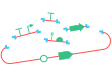
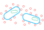
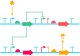

Protocols
Welcome to the protocols page! In my nearly 3 years of research in synthetic biology, I am quite confident that I have made most of the imaginable
mistakes that can occur in the lab, ranging from problems in standard protocols for PCR reactions, DNA assemblies, minipreps, cloning and handling of
E. coli, as well as dealing with errors that arise on the fly in the middle of (sometimes very important!) experiments.
However, from every failed attempt I strive to do my best not to repeat the same mistake twice. Overtime, I have made so many mistakes, and more importantly,
learnt just as many new tricks to overcome them that its became too much to hold it all in my head, and so I needed to document the lessons of my experiences
in a easy to access location, such as through my personal website.
Here, I have tried to accumulate “standard” protocols for various molecular biology techniques, as well as collect notes on how to troubleshoot some common
errors that may arise in a microbial synthetic biology lab, or at least for errors that I can speak about from personal experience.
PCR & DNA Assembly
Cloning with E. coli
Experimenting with E. coli
